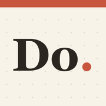

Do. Support
The to-do list for iPhone and iPhone Duo
Contact.
Questions, problems and ideas are all welcome. A person reads every message.
When you write about a problem, say which iPhone you have and what you did just before it went wrong. That is usually enough to find it.
Common questions.
What does Do. know about me?
Nothing. There are no accounts, and the app never asks for your name or email address. Your lists stay on your iPhone. If you turn on sync, they are scrambled on your device first, and the key stays on your devices, so we cannot read them. The privacy policy has the detail.
How do I give a task a date and time?
Type it the way you would say it. "Call the bank tomorrow 3pm" becomes a task called "Call the bank", due tomorrow at 3:00 PM. You can also tap the calendar button on any task and choose a date.
How do I see my calendar next to my tasks?
Open the Calendar card, connect your iPhone calendar, and allow access when your iPhone asks. Your meetings then appear on the same timeline as your dated tasks. Do. only reads your calendar. It never changes it, and it never sends it anywhere.
How do I add the widgets?
- Home Screen: touch and hold an empty area, tap Edit, then Add Widget, and choose Do.
- Lock Screen: touch and hold the Lock Screen, tap Customize, then add a Do. widget under the clock.
What changes on iPhone Duo?
Closed, you see one list at a time. Open, your lists sit side by side, and you can add Scheduled tasks as a further column.
How do I get my lists on a second device?
- On the device that has your lists, open Sync and tap Start syncing from this device.
- Tap Show a one-time code.
- On the new device, open Sync, type the code and tap Join with this code. Capital or small letters both work.
- Back on the first device, tap Approve this device. It shows a four-digit number.
- Type that number on the new device and tap Finish linking.
There is no account or password. Nothing is handed over until you have approved the device and typed the number.
What is a founding member?
The first 1,000 people to take a seat. A founding member gets Do. on iPhone free for life, a badge in the app, and an invitation code that gives friends 25% off the monthly or lifetime plan. To take a seat, open Sync in the app and tap Take a founding seat. There is no name or email address: your seat is a number.
Free for life arrives as your own App Store code, shown in the same place once the iPhone app is approved. You redeem it in the App Store.
I was given an invitation code. Where does it go?
Open Sync, type the code under Founding members and tap Use this invitation. Capital or small letters both work. The 25% discount is applied by the App Store when the plans open, from buttons that appear in the same place.
Can I use Do. on a computer?
Yes. Open do-productivity.github.io/app in a browser. To see the lists from your iPhone there, tap Sync and join with a one-time code, as above. Everyone uses that same address. What makes the lists yours is the key on your devices, not the link.
I paid, but the app does not show it.
Open the plans screen and tap Restore Purchases. Make sure the iPhone is signed in to the same Apple Account that made the purchase.
How do I cancel the monthly plan, or ask for a refund?
Apple handles all payments. To cancel, open Settings on your iPhone, tap your name, then Subscriptions. For a refund, go to reportaproblem.apple.com. We never see your card details and cannot issue refunds ourselves.
What happens when the free days end?
Everything you wrote stays readable. You can still tick off, edit and delete. Adding new items needs a plan.
How do I delete my data?
Lists that live only on your iPhone are removed when you delete the app. If you turned on sync, open Sync, then Erase the synced copy. That removes the scrambled copy from the server straight away. The lists on each device stay until you delete them there.